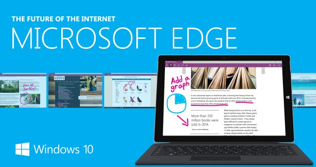

Delivering pro-active integrated and holistic solutions to our customer's risk portfolio needs
through re-engineered and measurable business processes!

Wadhac Ltd. has upgraded all of its site computers to Microsoft Windows 10 to take advantage of brand new Edge browser version 12.10049. Early benchmarks of the EdgeHTML engine-included in the first beta release of Edge in Windows 10 Build 10049-demonstrated drastically improved JavaScript performance in comparison to Trident 7 in Internet Explorer 11, and that Microsoft's new browser had similar performance to Google Chrome 41 and Mozilla Firefox 37. In the SunSpider benchmark, Edge performed faster than other browsers, while in other benchmarks it operated slower than Google Chrome, Mozilla Firefox and Opera. Later benchmarks conducted with the version included in 10122 showed significant performance improvement compared to both IE11 and Edge back in 10049. According to Microsoft's own benchmark result, this iteration of Edge performed better than both Chrome and Firefox in Google's Octane 2.0 and Apple's Jetstream benchmark. In July 2015, Edge scored 402 out of 555 points on the HTML5test. Chrome 43 and Firefox 38 scored 526 and 467 respectively, while Internet Explorer 11 scored 336. In August 2015, Microsoft released Windows 10 Build 10532 to insiders, which included Edge 21.10532.0. This beta version scored 440 out of 555 points on the HTML5test, this score is however lower by 5 points due to an error in the test feature detection; the real score should be 445 out of 555 points. Wadhac Ltd. hopes to see our web business be enabled by this fantastic technology!CISO & IT Manager
Wadhac Ltd.